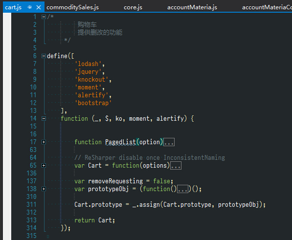
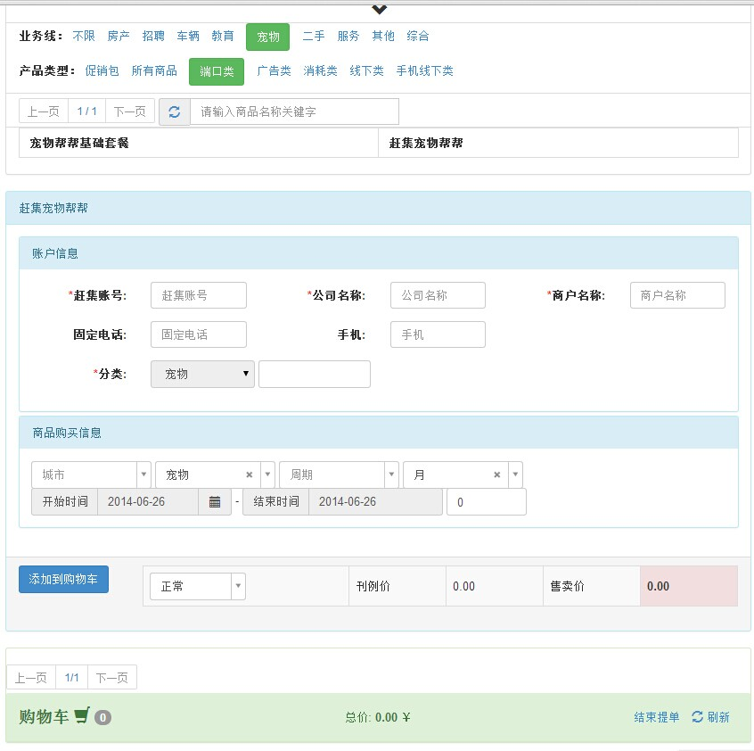

make things easier and more maintainable
Table of Contents
1 introduce
1.1 how we use javascript as before
1.1.1 use.as.normal.function.js
<script src="~/Scripts/Jquery/jquery-1.8.0.min.js"></script> $(function () { // do something after dom ready });
- drawback
- 依赖不明显
- 重复加载
- 污染全局变量
- what can we do ? use as module !
- Why
- 解耦,职责单一,高内聚…
- 模块本身可控,更容易解决依赖(新增,删除..)
- 平滑过渡
- How
原生的javascript本身没有这方面的设计,只能借助框架||规范
- cmd
- amd
- Why
1.2 CommonJS or AMD
- 都是为了模块化开发
- AMD A means Asynchronous loaded as they are needed 更适用于 cs (in-borwser)开发
- CommonJs loading all modules up front 更适用于 server-side (node.js..)
- 为了推广,其实双方都可以同步也可以异步.侧重点不同.
1.2.1 use.as.module.js
/* commonjs */ // package/lib is a dependency we require var lib = require( "package/lib" ); // behavior for our module function foo(){ lib.log( "hello world!" ); } // export (expose) foo to other modules as foobar exports.foobar = foo; /* AMD */ // package/lib is a dependency we require define(["package/lib"], function (lib) { // behavior for our module function foo() { lib.log( "hello world!" ); } // export (expose) foo to other modules as foobar return { foobar: foo } }); require(["package/myModule"], function(myModule) { myModule.foobar(); });
2 how we use amd in our proj

3 what else can we do ?
use it whth knockout.js (js MVVM Framework)
see a sample

- 模块化页面
分离为各个小型 widget
- 便于一定程度的重用,便于管理维护
- 问题: 如何进行widget间的交互?
- 通过事件通知机制,避免直接相互依赖,相互耦合
- 既然模块化了js widget，如何实现 view 和 js 分离
- 分离以后，数据通讯怎么做? no razor !
- 服务端的数据 (ajax request url…) 如何传递给 js 文件?
- 全局变量存储 js 变量,进行传递
- code smell
- 尽可能少的用 razor 对 html 结构进行控制.
- 尽可能使用js模板引擎进行控制,使前端更前端,更能less is more的高效处理
- 尽可能少的使用 $ 对dom进行动态变更,使用 mvvm 的双向绑定进行控制
- 尽可能在html中使用声明式编程,在后端用程序赋予每个声明具体的意义(因为html设计的本意就不是为了展现动态页面.html5?)
see a demo => http://uniorder.test.corp.ganji.com/shop/apply?ContractId=22362&contractSourceType=1